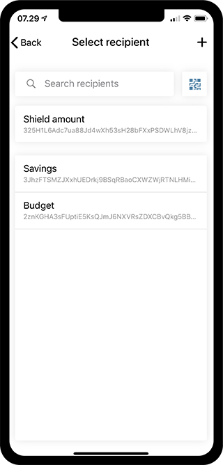
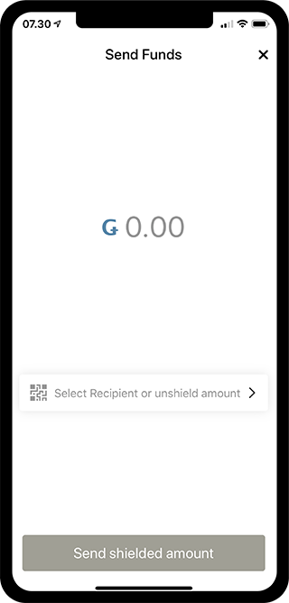
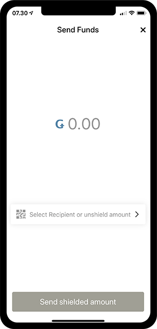

One Account, Two Balances and Shielded Transfers¶
With the release of Open Testnet 3, it is now possible to make shielded transfers. A shielded transfer is a GTU transfer in which the amount of GTU is encrypted. The addition of shielded transfers means that the Concordium ID app looks slightly different, to accommodate the new functionality. The new design and functionality will be explained below.
Accounts have two balances¶
When we think of a regular bank account, we know that it only has one balance. On the Concordium blockchain an account is slightly different, as it has two balances: A balance and a shielded balance.

As you can see on the screenshot, the new Accounts screen might look something like this: A handful of accounts, which each have two separate balances. Let’s take a look at the Example Account.
The account name Example Account and the total amount of the account is seen just above the two balances, and as you might notice we now have balance and shielded balance. The balance is the regular balance as we know it, and the shielded balance is the new addition to the account, that means we can make shielded transfers. As you see, the shielded balance has a small padlock beside it’s amount, and this means that the balance has received a shielded transaction that has not been decrypted yet. This is also reflected in the total balance of the account, and the total balance of all accounts, as we do not know the complete amount of GTU on the shielded balance(s) of all accounts yet.
Decrypting shielded transfers¶
To decrypt the received shielded transfers in the shielded balance, you simply have to press the shielded balance. At this point you will be prompted with an authentication screen, to verify that you are actually allowed to decrypt the shielded transfers.
After having done the verification, the phone will start to decrypt all the shielded transfers that have not yet been decrypted. Depending on the amount of shielded transfers that need decryption, this might take a little while. A shielded transfer only has to be decrypted once, so once it has been decrypted on your phone, it will stay decrypted on your phone. When all shielded transfers have been decrypted, you might notice that the padlock beside the shielded balance has disappeared, and that we now can see the complete shielded amount and total amount of the Example Account. If more shielded balances have a padlock beside their amounts, the process can be done for those as well, to reveal the total balance of all accounts.


Moving an amount between the two balances¶
To make a shielded transfer, you need to have the funds to do so. A shielded transfer can only be done from the shielded balance of an account to the shielded balance of another account. As it is not possible to make a shielded transfer from a regular balance, we might have to move some GTU from the regular balance to the shielded balance, before we have enough GTU for a shielded transfer. We call the action of moving GTU from the regular balance to the shielded balance a Shielding, and the reversed action of moving from the shielded balance to the regular an Unshielding.
Submitting a shielding¶
To shield an amount you have to enter the balance of the account, on which you want to make a shielding. Let’s make a shielding from the balance of the Example Account. After entering the balance, you have to press the Send button, which will take us to the next screen.


On the next screen you can enter the desired amount, and you have the ability to Select recipient or shield amount. When deciding on a recipient, press the Shield amount option. If everything looks correct, you can press Shield amount to finish the process.


Submitting a unshielding¶
To conduct an unshielding, you just have to follow the same process as for a shielding, except you start from the shielded balance, and choose Unshield amount in the recipients list.
Making a shielded transfer¶
Let’s take the shielded balance of the Example Account as an example for a shielded transfer. To conduct a shielded transfer, you have to press the Send button again. On the next screen, we decide on an amount, and press the Select recipient or unshield amount button, just as you did for the shielding and unshielding processes.
 


At this time, instead of choosing unshield amount, you decide on a recipient. Let’s say you want to make a shielded transfer to your Savings account, so you press the recipient called Savings. Notice the shield on the side, which means it will be a shielded transfer to the shielded balance of your Savings account. Of course shielded transfers can also be done to external accounts not owned by yourself.
Fees¶
Making shieldings, unshieldings and shielded transfers will cost a fee, just like the regular transfers. This fee will differ between the different types of transfers, but the one thing they have in common is that they will always be deducted from the regular balance of the account used to make the transaction. These fees will of course be shown in the log of your regular balance, but it will also be shown if you take a look at the transaction details from the shielded balance.
Support & Feedback¶
If you run into any issues or have suggestions, post your question or feedback on Discord, or contact us at testnet@concordium.com.